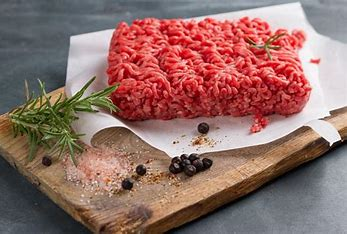

Ingredients
- Beef 
- Onions

- Mushrooms
- Sour Cream

- Egg Noodles
Instructions
Cook the Beef and Onions: In a large skillet, heat olive oil over medium-high heat. Add the beef strips and cook until browned. Remove and set aside. In the same skillet, add sliced onions and cook until softened. Add Mushrooms: Stir in the sliced mushrooms and minced garlic. Cook until the mushrooms are tender. Stir in Broth: Add the beef broth and Worcestershire sauce to the skillet. Bring to a simmer. Add Sour Cream: Lower the heat and stir in the sour cream until well combined. Season with salt and pepper to taste. Serve: Serve the beef stroganoff over cooked egg noodles and garnish with fresh parsley. Enjoy!